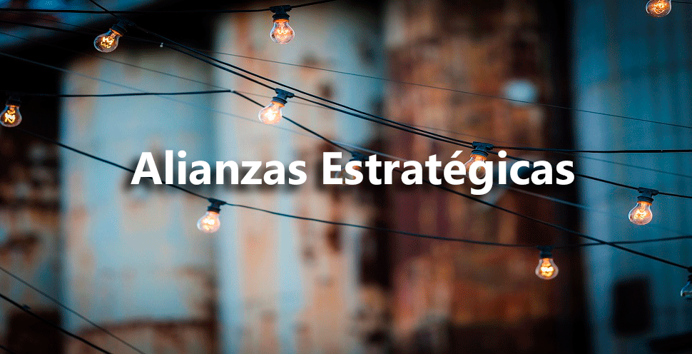

<div id="single-portfolio">
	<div id="portfolio-details" class="container">
		<a class="close-folio-item" href="#"><i class="fa fa-times"></i></a>
		
		<div class="row">
			<div class="col-sm-12">
				<div class="project-info">
					<h3>Alianzas estratégicas</h3>
					<p>En Ielsi creamos alianzas estratégicas para  proporcionar un acceso más fácil a las nuevas oportunidades, por ejemplo:</p>
					<ul>
						<li>Acceso a mercados</li>
						<li>Aprovechamiento de tecnología</li>
						<li>Mercado de Innovaciones, etc. </li>
					</ul>
				</div>
			</div>
		</div>
	</div>
</div>